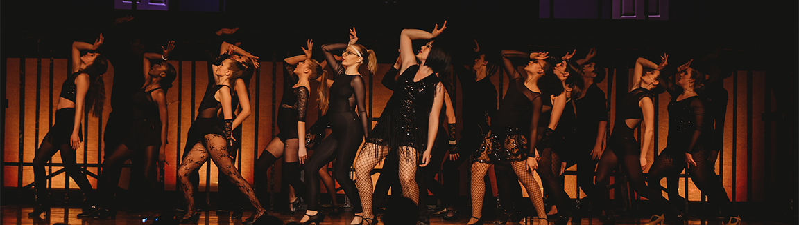

Live Production
Details
Tools
Adobe Creative Suite Apps
QLab
Isadora
Vectorworks for Lighting Rep Plotting
ETC Ion
Yamaha 01V96, TF3, Soundcraft LX series, Allen & Heath GL series
Roles
School theater sound head (3rd thru 8th grade)
School theater lighting and set design head (Junior & Senior year high school)
Thomas Metcalf school theater technical adviser